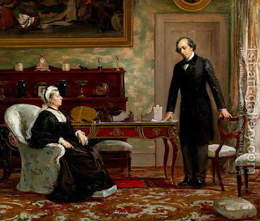

Gittin 86 - Three Gittin are Invalid
Three Gittin are invalid, but if she married on their basis anyway, the child she has from the second marriage is legitimate: a Get that the husband wrote in his own handwriting but there are no witnesses signed on it; a Get that has no date recorded on it; a Get that has has only one witness signed on it.
Rabbi Elazar says, "Even though there are no witnesses signed on the Get, but he gave it to her in the presence of witnesses, it is valid, for witnesses sign on the Get only for the benefit of society."